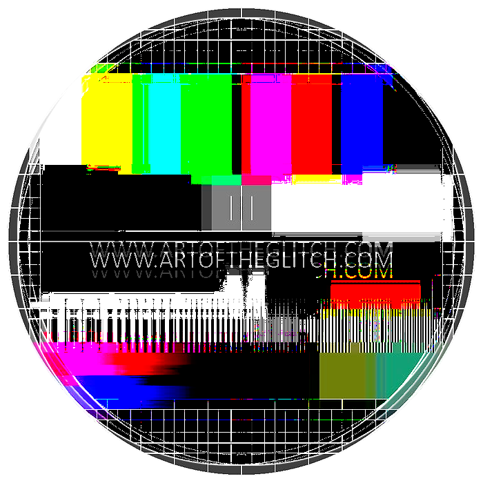

Welcome!
www.artoftheglitch.com provides tutorials and information regarding the techniques and methods used to manipulate/corrupt digital image data in order to generate the surreal aesthetic of the digital age.
There are a multitude of ways to corrupt and modify digital image data, each with it's own unique visual manifestation in the final product. If you are technically minded and are looking for a way to express yourself visually, you've come to the right place. With our tutorials, we invite you to experiment with data and create something beautiful.
